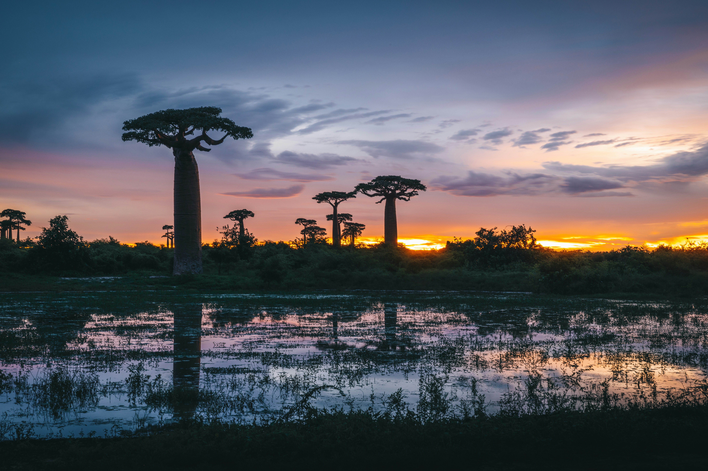
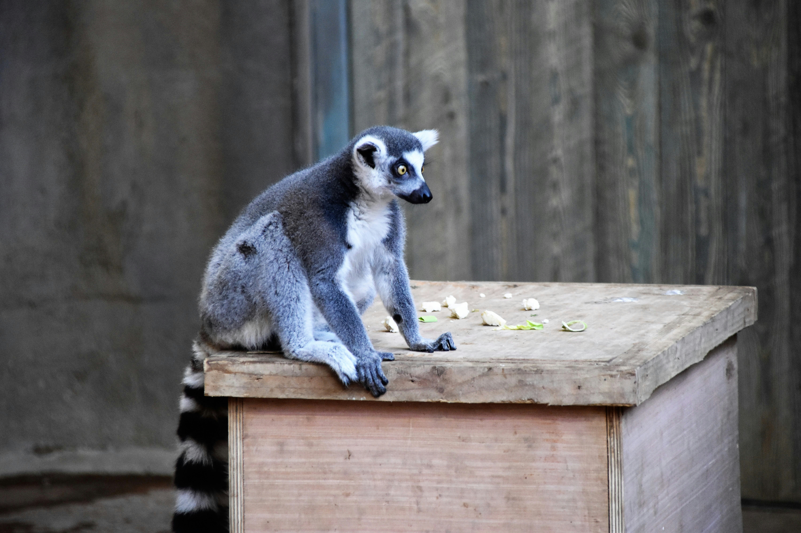
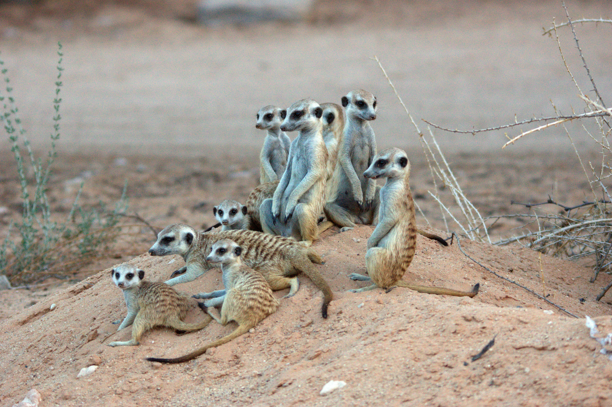
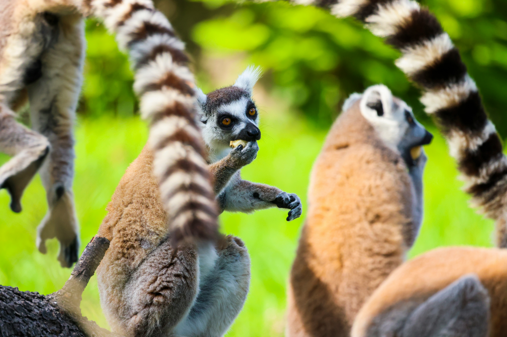

search
language
Where lemurs meet baobabs in the world's evolutionary treasure island
In the Indian Ocean, Madagascar captivates with unique wildlife, ancient baobabs, and pristine beaches – offering evolutionary wonders found nowhere else on Earth.
"We were completely mesmerized by Madagascar's otherworldly beauty," wrote a recent visitor. "Watching ring-tailed lemurs dance in the spiny forests, then walking among ancient baobab trees at sunset – it felt like visiting another planet. The uniqueness of every ecosystem and the warmth of the Malagasy people created memories that will last forever."
The same traveler described unforgettable wildlife encounters: "Coming face-to-face with indri lemurs as their haunting calls echoed through the rainforest was pure magic. Madagascar delivers experiences that remind you how diverse and wonderful our planet truly is."
Madagascar consistently amazes visitors with its biodiversity. "From the alley of baobabs to the tsingy stone forests, from rainforest canopies to coral reefs – Madagascar showcases evolution in its most dramatic form," wrote a first-time visitor.
Madagascar leaves an indelible impression with its endemic species, dramatic landscapes, and rich cultural heritage, offering visitors a journey through millions of years of isolated evolution.
A Madagascar tour takes you through evolutionary marvels – from the lemur-filled rainforests of Andasibe to the otherworldly tsingy formations, from the iconic baobab avenues to the turquoise waters of Nosy Be.
Trek through primary rainforests to encounter dozens of lemur species, explore geological wonders found nowhere else, discover unique chameleons and exotic flora, and relax on some of the world's most pristine beaches surrounded by coral reefs.
Madagascar's unique ecosystems and cultural sites naturally group into four main regions.
Madagascar's most famous destination encompasses the legendary Andasibe-Mantadia National Park with its indri lemurs, Ranomafana National Park's thermal springs, and the Masoala Peninsula with its primary rainforest meeting coral reefs.
For iconic landscapes and unique wildlife, Western Madagascar offers the spectacular Avenue of the Baobabs, the surreal Tsingy de Bemaraha stone forest, and Kirindy Forest with its fossa and mouse lemurs.
The unique south features the extraordinary Spiny Forest with its octopus trees, Berenty Reserve for ring-tailed lemurs, and the Andohahela National Park where spiny forest meets rainforest.
Madagascar's tropical paradise includes the islands of Nosy Be with vanilla plantations, Île Sainte-Marie for whale watching, and the remote Tsarabanjina with pristine beaches.

Each of our holidays is as distinct as the traveller undertaking it. The itineraries here are just examples of what is possible, with costs and details; see all 20 Madagascar tour ideas here.
you'll travel in a private 4WD with the same expert guide throughout, offering flexibility and deep insights into Madagascar's unique ecosystems.
you'll experience guided walks to see multiple lemur species, accompanied by experienced local guides through Madagascar's diverse habitats.
showcase Madagascar's spectacular coastline and islands, combining wildlife with relaxation on pristine beaches and coral reef exploration.
Call us now to speak to a Madagascar expert who can address your questions and craft your perfect trip.
12 Days / 11 Nights
Discover Madagascar's iconic wildlife including indri lemurs, chameleons, and baobabs across eastern and western parks.

10 Days / 9 Nights
Track multiple lemur species across different habitats from rainforests to dry forests with expert primate guides.

16 Days / 15 Nights
Explore Madagascar's diversity from eastern rainforests to western tsingy and southern spiny forests.

14 Days / 13 Nights
Premium wildlife experience with luxury accommodation, private guides, and exclusive access to remote areas.

13 Days / 12 Nights
Combine lemur watching in Andasibe with relaxation on Nosy Be's pristine beaches and coral reef snorkeling.

11 Days / 10 Nights
Capture Madagascar's most iconic scenes from baobab avenues to lemur portraits with expert photography guidance.
Explore Madagascar's unique wildlife destinations and their extraordinary characteristics
Visit our trip chooser to explore your options and find inspiration for your perfect island adventure